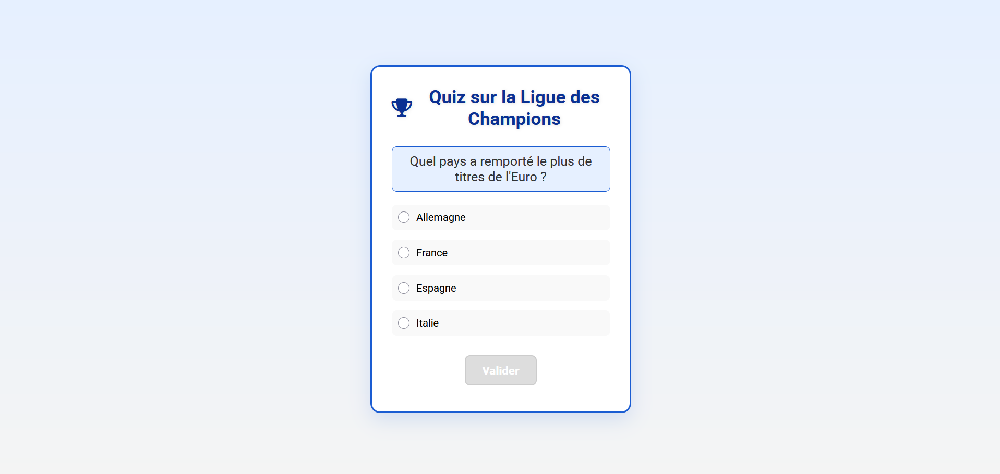
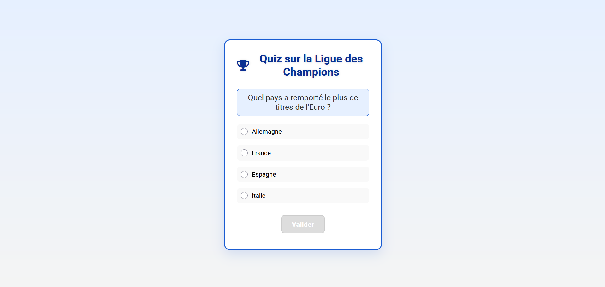

Football Historique
Un site éducatif et interactif dédié à l’histoire des grandes compétitions de football.
Résultats et Impact
Footix offre une expérience immersive en regroupant des données historiques, des tableaux statistiques et des vidéos emblématiques dans une interface élégante et responsive. Les animations (fade-in, slide) et le support mobile via un menu burger améliorent l’accessibilité. Ce projet m’a permis de perfectionner mes compétences en développement front-end, en gestion de contenu multimédia, et en création de sites interactifs, tout en approfondissant ma passion pour le football.

 
